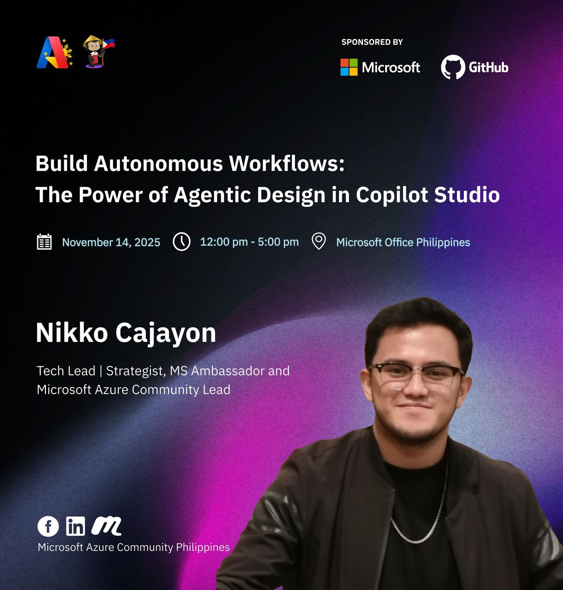
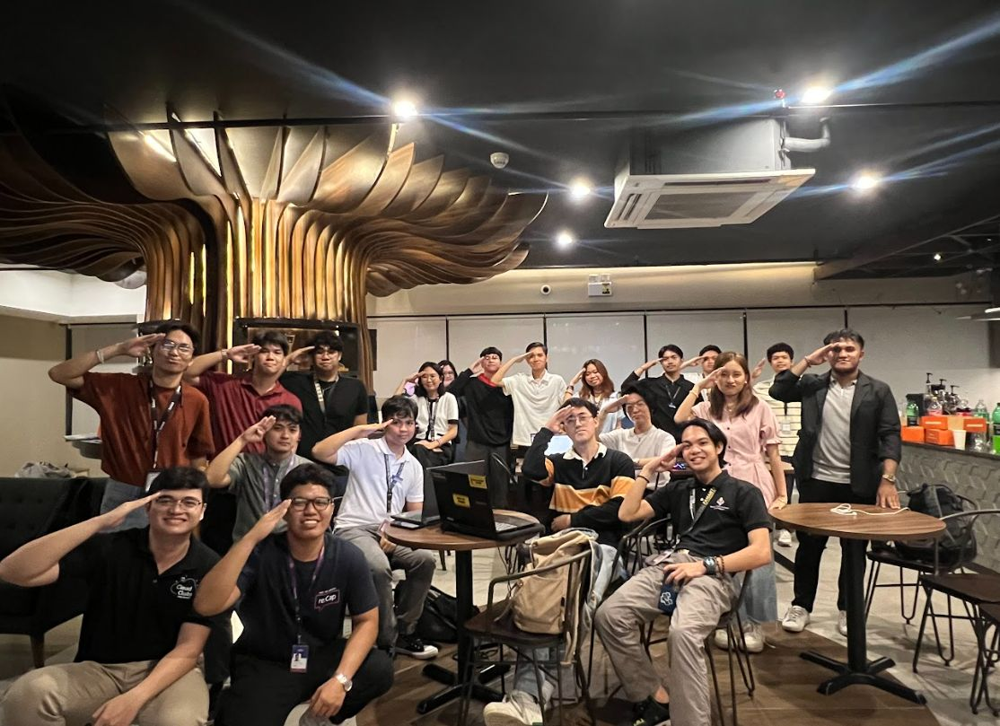
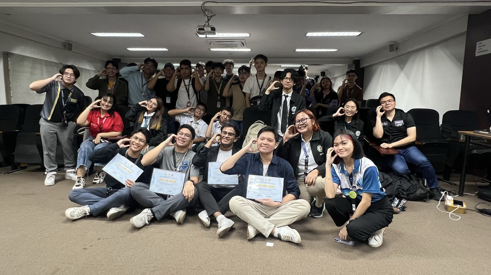
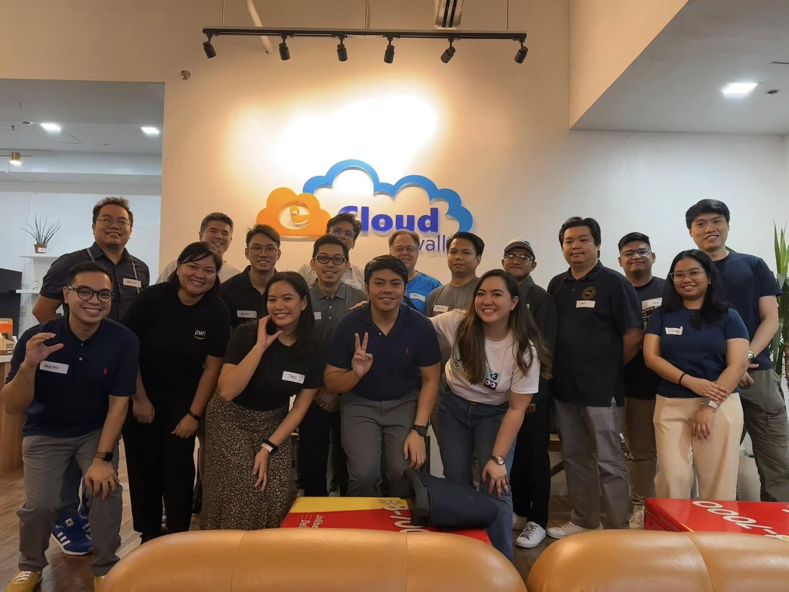
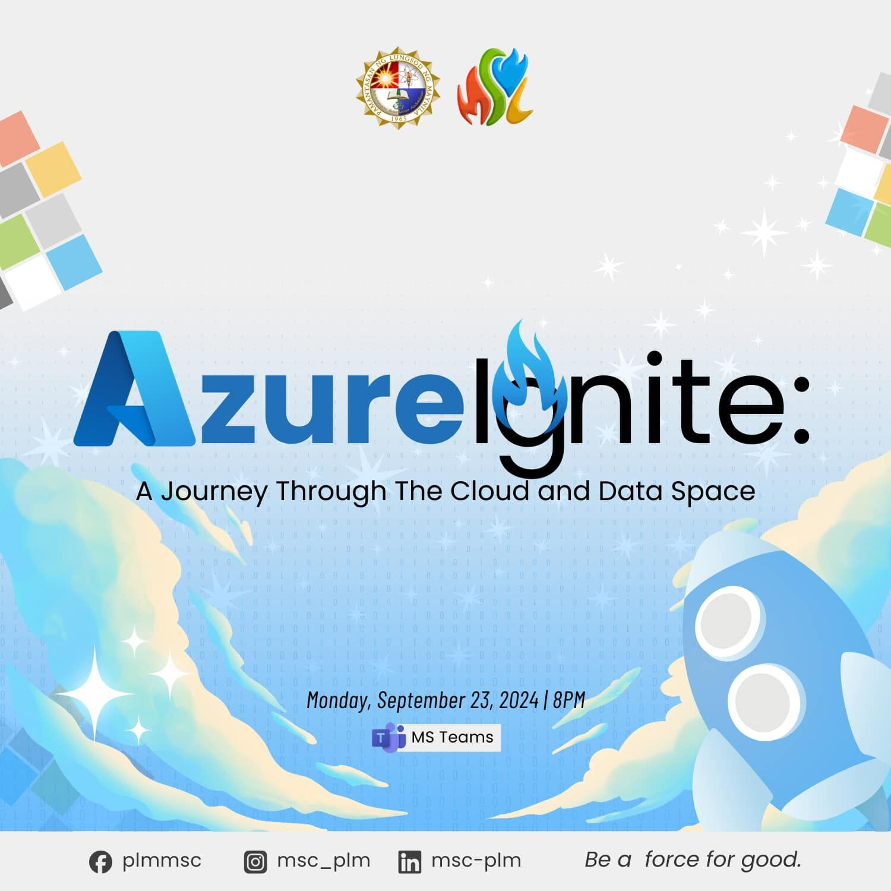
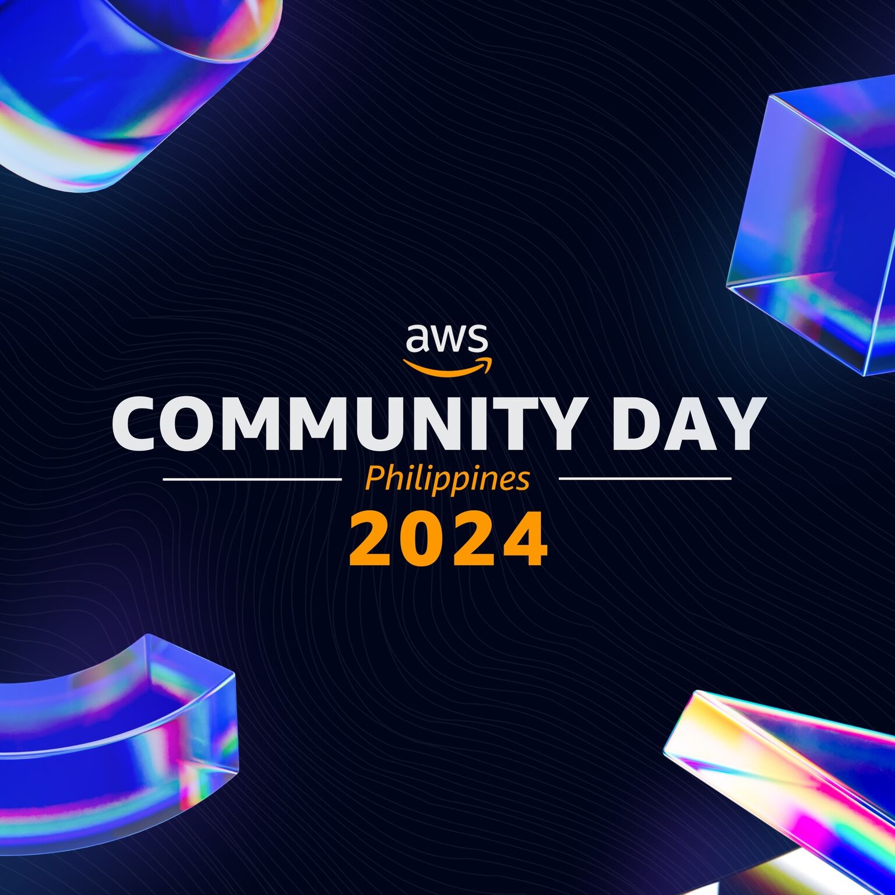
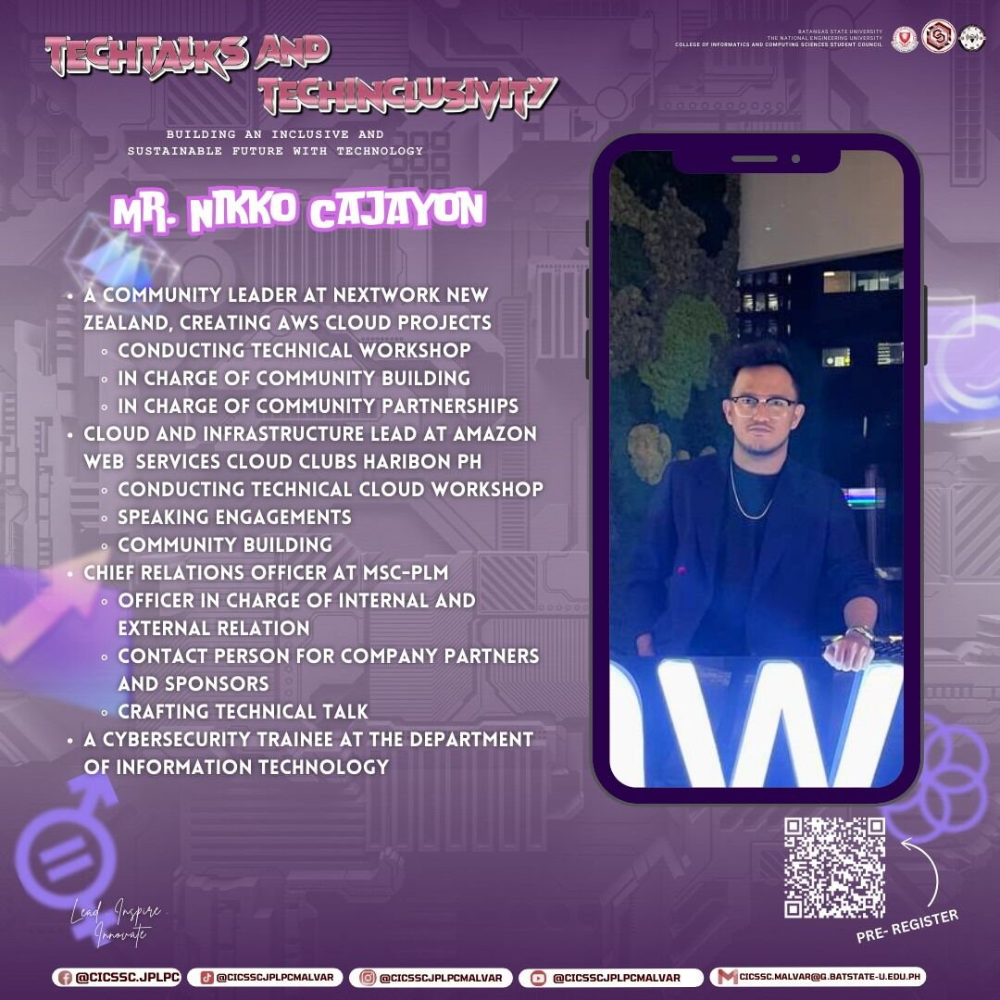

Leadership
Community
Cloud Computing
CI/CD, Infrastructure as Code
Business Solution
Engineering and Automation
Speaker
Talks & Workshops
About Me

As an emerging technologist, I focus on building practical, hands-on solutions across cloud and AI. My experience spans core cloud services, security fundamentals, automation, and developing end-to-end projects that strengthen my understanding of real-world systems. I’ve grown through consistent learning, building projects, and staying active in various tech communities and events.
I’m engaged in the broader technology ecosystem as a community lead and speaker, contributing through workshops, talks, and collaboration with student and professional organizations. I enjoy sharing knowledge, helping others get started, and creating learning spaces for aspiring technologists.
Projects
Visualize Relational Database
Producing digestible insights out of raw data, using AWS Databases and Amazon QuickSight
Load Data into DynamoDB
Comprehensive guide to loading and managing data in Amazon DynamoDB with best practices
Configure Aurora DB with Elastic Compute Cloud
Setting up Amazon Aurora database with EC2 instances for scalable cloud applications
Query Data with DynamoDB
Advanced querying techniques and optimization strategies for Amazon DynamoDB
Provision Cloud Data Resources
Using AWS CLI to provision and manage cloud data resources efficiently
DevOps
Comprehensive DevOps practices and implementation strategies for cloud environments
Seekurity
Computer Vision System for Real-time Security Monitoring and and incident reporting of Violence Pattern Detection.
For trainig the CV model we used AWS Sagemaker and annotated datasets
Serverless Data Processing Pipeline
Built a real-time data processing pipeline using serverless technologies that can handle over 100K events per day with 98.9% uptime and automatic scaling capabilities.
Infrastructure as Code Framework
Developed a reusable IaC framework that standardized cloud deployments across multiple teams, reducing deployment time from hours to minutes.
Cloud Security Automation
Implemented automated security scanning and compliance monitoring system that ensures 100% compliance with industry standards across all cloud resources.
Autonomous Agentic Workflow
Automating repetitive workflows leveraging the power of Agentic Design in Copilot Studio
AI Azure Event Workflows
Intelligent event-driven workflows using Azure AI services for automated processing and decision-making
AI Azure Streaming Backend
Real-time streaming backend powered by Azure AI for processing and analyzing live data streams
AI DevOps API
AI-powered DevOps automation API for intelligent pipeline management and deployment optimization
AI FinOps Vercel
AI-driven financial operations optimization for Vercel deployments with cost analysis and recommendations
AI Security Audit
Automated security auditing system using AI to detect vulnerabilities and compliance issues
AWS Networks VPC
Comprehensive AWS VPC networking architecture with multi-tier security and high availability design
Talks and Engagements
I enjoy sharing knowledge and experiences with the cloud community through various speaking opportunities:

az:Repo - The Code and Cloud Agentic Workshop
Topic: "Build Autonomous Workflow"
Shared insights on building and automating repetitive workflow using the Agentic design of Copilot Studio
Microsoft HQ, One Ayala | November 2025

SkillBuilder Kick-off
Topic: "Introducing Cloud Computing and Career Development"
Kickstarting cloud learning journey with AWS fundamentals and career guidance for aspiring cloud professionals.
AWS Cloud Club Philippines | 2024

Beyond Code
Topic: "Building System Applications Beyond Code"
Exploring system design and architecture principles that go beyond traditional coding approaches.
Tech Community | 2024

Cloud Educators
Topic: "Navigating and Starting Your Infrastructure with AWS EC2"
Hands-on workshop covering AWS EC2 fundamentals and infrastructure setup for beginners.
Cloud Educators Community | 2024

Azure Ignite
Topic: "Microsoft Azure Innovation Showcase"
Exploring the latest Azure services and innovations announced at Microsoft Ignite conference.
Microsoft Community | 2024

CloudFest: Know the Way
Topic: "Navigating Cloud Technologies"
Guiding developers through the cloud technology landscape and best practices for cloud adoption.
CloudFest | 2024

AWS Community Day
Topic: "Cloud Community Building"
Sharing experiences in building and nurturing cloud technology communities across the Philippines.
AWS Community | 2024

Tech Talk Series
Topic: "Emerging Technologies Discussion"
Interactive discussion on emerging technologies and their impact on software development practices.
Tech Community | 2024
Certifications
My commitment to continuous learning is reflected in these industry certifications:
Certified Cloud Practitioner
Foundational expertise in the AWS Cloud, demonstrating core knowledge of distributed applications, system security, architecture best practices, and pricing models on the AWS platform.
Valid until: Dec 2027
AZ 900
Certification foundational expertise in Microsoft Azure fundamentals.
Valid until: Oct 2026
Professional Affiliations
Active participation in professional organizations and communities:
NextWork
Role: Community Lead | Strategist
Active contributor to cloud-native projects and advocate for containerized applications and microservices architecture.
Visit SiteAWS Cloud Club - Philippines
Role: Director of SkillBuilder
Help organize monthly meetups and regularly speak on AWS best practices and new services.
Visit SiteAWS CC - Haribon
Role: Chief Technology Officer
Promote DevOps practices and culture transformation within the local tech community.
Visit SiteMicrosoft Azure Developers Philippines
Role: Co-Founder
Stay connected with the latest advances in computer science and engineering practices.
Visit SiteMicrosoft Learn Program
Role: Microsoft Student Ambassador
Build Project that showcase Azure technologies, and conduct technical workshops
Visit SiteCloud Educators Community
Role: Learner | Mentor
Learn together, Build together, Teach together. Cloud educators initiative gives you platform to learn and grow!
Visit SiteMicrosoft Student Community - PLM
Role: Chief Relations Officer
Bridges collaboration and partnership between student body and industry professionals
Visit SiteGet In Touch
I'm always interested in discussing cloud architecture, sharing knowledge, or exploring new opportunities.